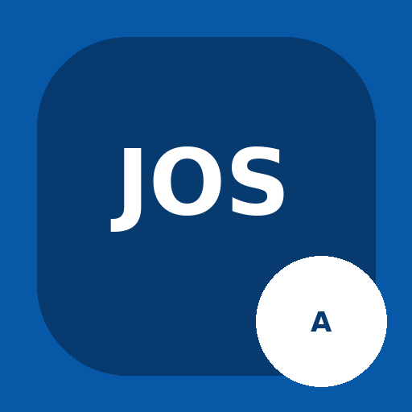

Jasa Orang Suruhan
Pasang Aplikasi JOS Admin
Bersama JOS, semua pasti beres!
Kelola pesanan, mitra, dan operasional JOS dengan lebih praktis. Pasang aplikasi JOS Admin di layar utama HP agar mudah dibuka kapan saja.
Gratis • Tidak perlu mencari aplikasi di Play Store
Jika tombol pasang belum muncul
- Buka halaman ini menggunakan Google Chrome di Android.
- Tekan menu titik tiga (⋮) di pojok kanan atas Chrome.
- Pilih Instal aplikasi atau Tambahkan ke layar utama.
- Ikuti petunjuk sampai ikon JOS muncul di HP.
JOS — Jasa Orang Suruhan